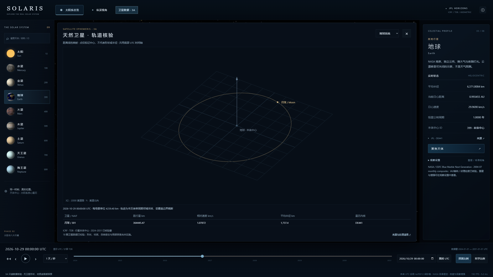
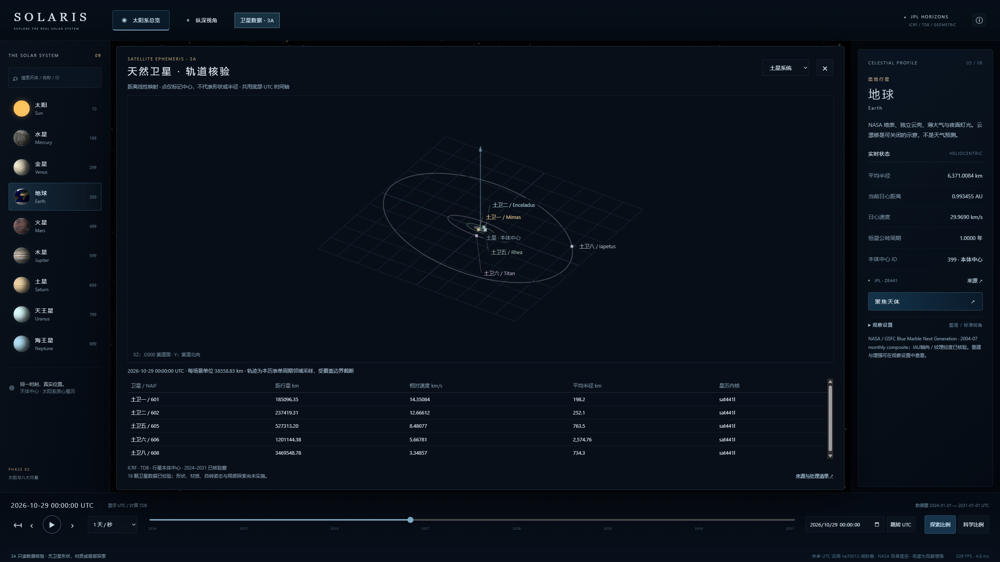
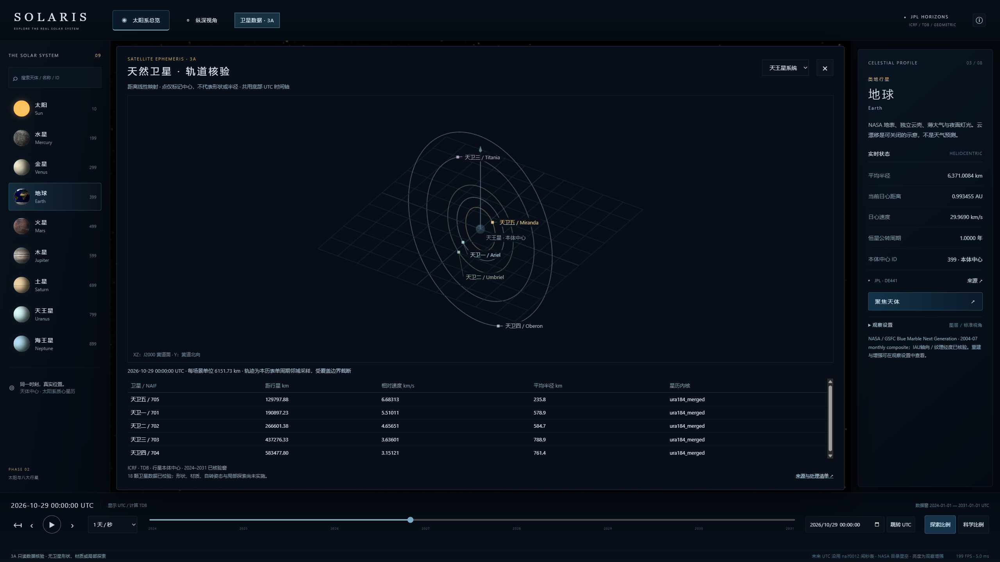
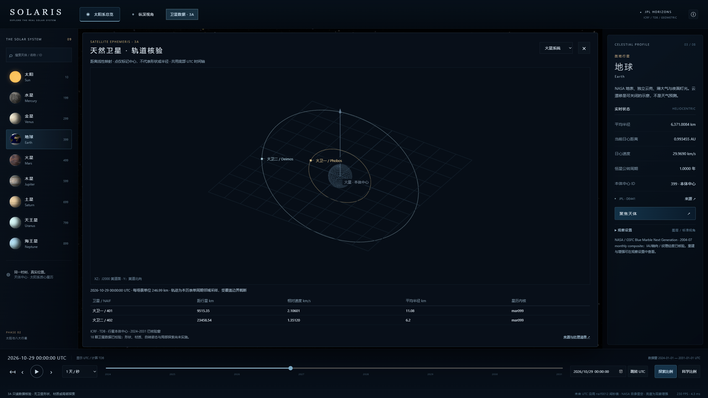
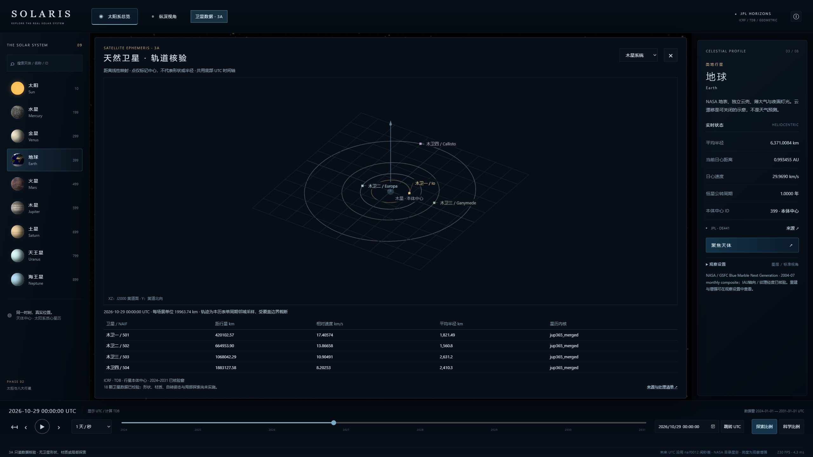
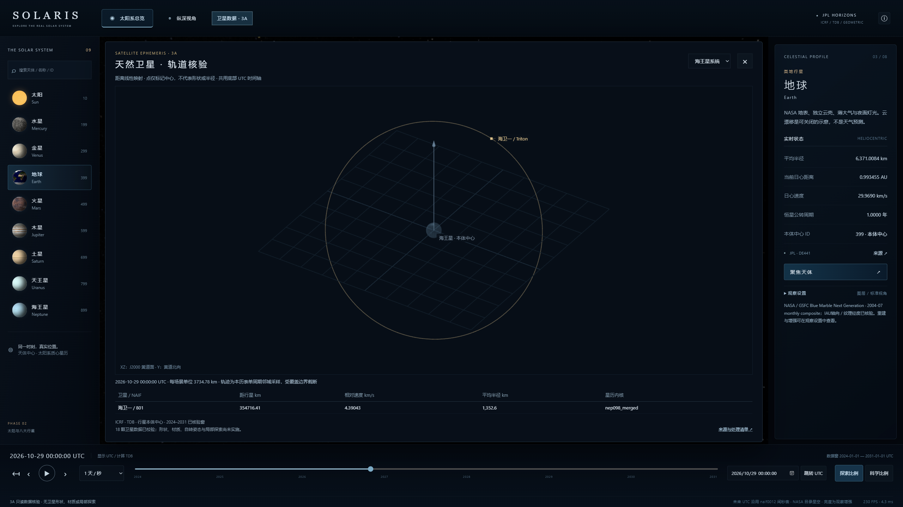
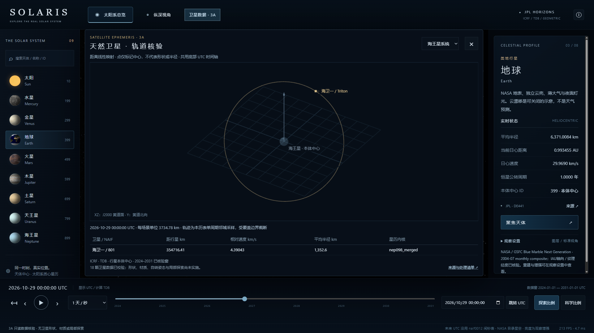
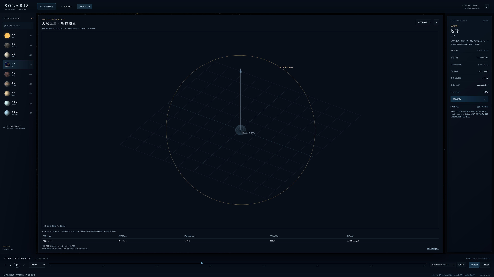
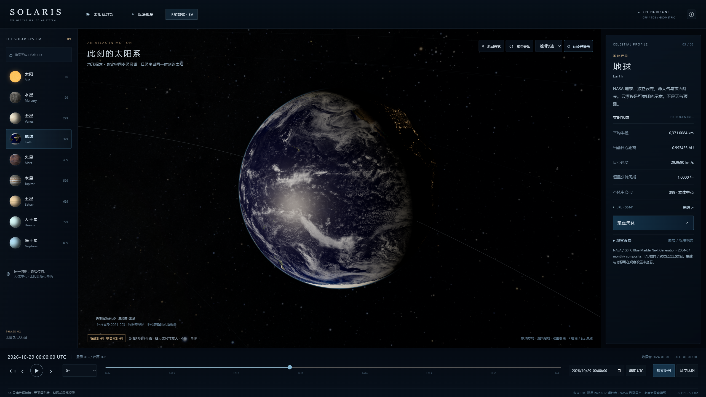
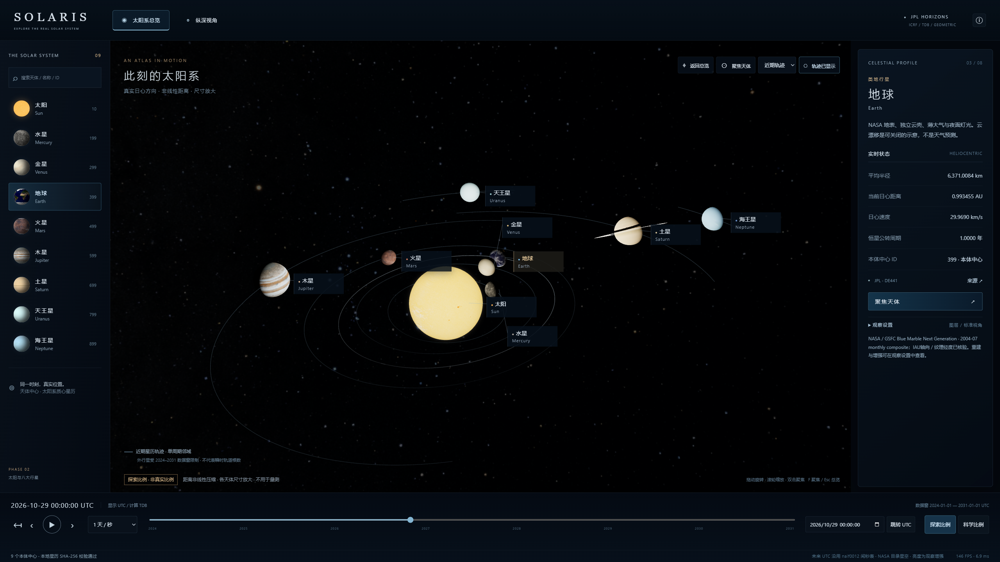

SOLARIS · 3A 天然卫星数据与真实轨道
18 卫星 / 6 系统 / 1,530 留出状态。当前只做数据和轨迹，中心定位点不代表卫星半径或形状；尚未制作卫星材质和局部探索。
验收报告 · 三日期 54 行误差 CSV · 独立科学统计 · Chrome 实测 · Edge 实测
真实浏览器录屏 92.48 秒，1440p 源视口 / 1080p 编码；底部原时间轴驱动全部数据。

地月系统 · Chrome 2560×1440 · 点击原图火星 · Phobos / Deimos · Chrome 2560×1440 · 点击原图木星四大卫星 · Chrome 2560×1440 · 点击原图
土星五颗重点卫星 · Chrome 2560×1440 · 点击原图
天王星 · 真实空间倾斜 · Chrome 2560×1440 · 点击原图海王星 · Triton 真实轨迹 · Chrome 2560×1440 · 点击原图Edge 六套系统
399 系统 · Edge · 点击原图
499 系统 · Edge · 点击原图
599 系统 · Edge · 点击原图699 系统 · Edge · 点击原图799 系统 · Edge · 点击原图
899 系统 · Edge · 点击原图桌面分辨率与原场景回归

1920×1080 · 点击原图
3840×2160 · 点击原图原总览保留 · 点击原图
原地球 Hero 保留 · 点击原图
开发前基线 · 点击原图本轮到 3A 停止；3B 资产姿态、3C 局部探索、小行星与教学功能未展开。所有参考概念图只作为风格参考。